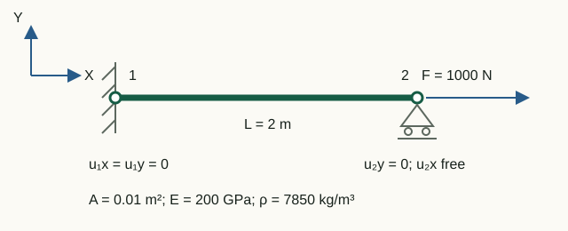
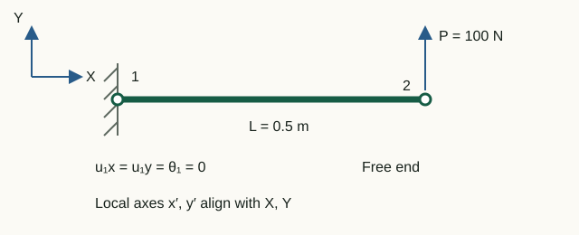

From nodal displacements to forces
The solver first finds the global displacement vector u. To interpret an individual element, select its components, transform to local axes and apply the same local stiffness matrix used in assembly.
Three recovery steps
For element e the function recoverElementResults performs:
ue = u(dofse)
ulocal = Te ue
qlocal = klocal ulocal
The first expression selects components using element.dofs, rather than node numbers. The second transforms global displacements into element axes. The third gives generalized nodal forces acting on the element and work-conjugate to its local DOFs.
elementDisplacements = u(element.dofs);
localDisplacements = element.transformation * elementDisplacements;
localEndForces = element.localStiffness * localDisplacements - feLocal;What static analysis returns
solveStatic places the array elementResults in the result structure. Each element record contains:
| Field | Contents | Coordinate system |
|---|---|---|
globalDOFs | addresses of element components in the full vector | global |
localDisplacements | end displacements and rotations | local |
localEndForces | generalized end forces and moments | local |
axialStrain | constant axial strain | along the local axis x |
axialStress | axial stress Eε | along the local axis x |
axialForce | axial force Aσ | tension is positive |
Type 112 member
The local displacement order is [u1; v1; u2; v2]. Axial strain, stress and force are calculated as:
ε = (u2 − u1)/L, σ = Eε, N = Aσ
Positive ε, σ and N mean tension; negative values mean compression. In tension, local end forces have opposite signs:
qlocal = [−N; 0; N; 0]
There is no contradiction: the scalar N describes the member state, while components of q give the force directions at its two ends.
Type 113 frame
Frame local vectors use a consistent order:
ulocal = [u1; v1; θ1; u2; v2; θ2]
qlocal = [N1; V1; M1; N2; V2; M2]
Each force or moment is positive along its work-conjugate local DOF direction. For example, for a horizontal cantilever of length L and force P in the positive direction of the local axis y at the free end:
qlocal = [0; −P; −PL; 0; P; 0]
localEndForces contains the result klocalulocal − feLocal. For an element load, the total consistent vector feLocal is subtracted from this product; it is available as equivalentLocalLoadVector. Fields axialStress and axialForce describe only the axial state; the function does not generate bending stress distributions.
Element forces and reactions are different quantities
Reactions are calculated in global coordinates for the entire model:
R = K u − F
End forces belong to one element and use its local axes. At a shared node, contributions from several elements are first rotated back using transposed T and summed:
K u = Σ TeT qlocal,e
The external load is then subtracted from the internal nodal forces. Thus localEndForces cannot be called reactions without transformation and assembly. They coincide directly only in special cases, such as the fixed end of a single horizontal element with no applied nodal load at that end.
Laboratory 07. From displacements to stresses and end forces
The aim is to independently verify two results using member extension and cantilever equilibrium.


Input data and notation
For the member, use the laboratory 03 data: L = 2 m, A = 0.01 m², E = 200 GPa, F = 1000 N. For the cantilever, L = 0.5 m, A = 10⁻⁴ m², E = 200 GPa, I = 0.33·10⁻⁸ m⁴, P = 100 N upward. Both models are horizontal, with local axes aligned with global axes.
Before running: hand calculations
- For the member, find σ = F/A, ε = σ/E, ΔL = εL and N = σA.
- For the cantilever, write Y-force equilibrium and moment equilibrium about node 1. Find R₁y and M₁ with the force direction shown.
Run in Octave
Run from the project root. The supplied function prints the results; you do not need to edit its code for this exercise.
addpath(pwd);
setup;
addpath(fullfile(pwd, "reference", "examples"));
r = example_07_result_recovery();Working with the results
- From
Truss local displacements [u1; v1; u2; v2]find u₂ − u₁ and divide by the length. Compare strain, stress and axial force with the printedTruss strain,stressandaxial force. - In
Truss local end forcesfind the two axial components. Explain their opposite signs although axial force N is positive and the member is in tension. - Label the six components of
Frame local end forces [N1; V1; M1; N2; V2; M2]with units N or N·m. Compare the first three withFrame support reactions, and the last three with the free-end load. - Check equilibrium: V₁ + V₂ = 0 and M₁ + M₂ + V₂L = 0. Use linearity to predict the signs of strain, stress, forces and reactions if the load reverses.
Member: ΔL = 10⁻⁶ m, ε = 5·10⁻⁷, σ = 100 kPa, N = 1000 N; end forces [−1000; 0; 1000; 0] N. Cantilever: [0; −100; −50; 0; 100; 0], where the third and sixth components are measured in N·m. These are nodal end-force components along positive local axes, not section-diagram sign conventions.
What to include in the report
Both diagrams, hand calculations, an analytical/Octave/units table, the two cantilever equilibrium equations, and an explanation of end-force signs.
All laboratories with one command
run_reference_examples runs seven examples in sequence and returns results in fields named after the functions:
addpath(pwd);
setup;
addpath(fullfile(pwd, "reference", "examples"));
results = run_reference_examples();For a quiet check, use run_reference_examples(false). The runner finds the repository root from its own file, so once the examples directory is on the path it does not depend on the current working directory. Exceptions are not caught: the first failed check immediately stops execution.
Chapter source code
recoverElementResults.m— DOF selection, local transformation and force recovery;solveStatic.m— reactions and element results included in the response;tests/test_result_recovery.m— regression checks for a member, rotation and cantilever;example_07_result_recovery.m— executable laboratory;run_reference_examples.m— single entry point for the laboratories.
Theory
- Young W. Kwon, Hyochoong Bang, The Finite Element Method Using MATLAB, p. 201 for the truss member and p. 261 for the beam element.
- R. D. Cook, D. S. Malkus, M. E. Plesha, Concepts and Applications of Finite Element Analysis, 3rd ed., p. 113.
Diagrams for loaded elements
For total local intensities qx, qy and end vector f: N(x)=−f₁−qx·x, V(x)=−f₂−qy·x, M(x)=−f₃+f₂·x+qy·x²/2. The postprocessor includes the interior extremum of M. Scalars axialStrain, axialStress, axialForce and the stress returned by StressCalc are average axial quantities, not bending stresses. Displacement geometry retains finite element interpolation.
Results with element loads are exported as JSON v2; legacy v1 results remain supported.
MPC
Each C row has dependent coefficient +1 and master coefficients −c. The residual splits as r = supportReactions + Cᵀλ; mpcForces = Cᵀλ and mpcMultipliers = λ. At a fixed master, the support reaction is r minus the MPC force. For a mode, r = Kφ − ω²Mφ; forces use the stored eigenvector amplitude. The reactions field retains the full residual. JSON v3 labels these quantities separately.